动量迭代快速梯度符号方法(Momentum Iterative FGSM,MI-FGSM)
一种用于生成对抗样本（adversarial examples）的技术。这种方法结合了动量和快速梯度符号方法（FGSM），旨在提高对抗样本的攻击效果和稳定性。
1. 背景
- 对抗样本：对抗样本是通过在输入数据中加入小扰动来误导机器学习模型的输入。
- 快速梯度符号方法 (FGSM)：FGSM 是一种生成对抗样本的方法，通过计算损失函数相对于输入的梯度并沿着梯度方向对输入进行小幅度扰动来生成对抗样本。
- 动量：在优化算法中，动量用于加速收敛，通过累积前几次梯度的指数加权平均，使得优化过程更稳定。即保留的历史梯度称为动量。
2. 基本思想
MI-FGSM 将动量引入到 FGSM 中，通过在每一步迭代中累积梯度的动量在，生成更强的对抗样本。其核心思想是在每一步迭代中，利用动量来平滑和加速梯度更新。
FGSM 加入动量的好处
- 抑制局部抖动：
- 动量机制可以帮助平滑梯度更新，减少每次迭代中的抖动。这有助于避免陷入局部最优解，使得生成的对抗样本更加稳定和有效。
- 加快收敛速度：
- 动量项通过累积之前几次迭代的梯度方向，加快了梯度下降的收敛速度。在对抗攻击中，这意味着可以更快地找到有效的对抗扰动，从而提高攻击效率。
- 增强攻击效果：
- 动量机制能够更有效地找到目标模型的弱点，使得生成的对抗样本在欺骗模型时更具攻击性。这是因为动量累积了多个迭代的梯度信息，能够更全面地捕捉模型的脆弱点。
- 提高鲁棒性：
- 动量的使用可以使对抗攻击更加鲁棒，即对不同模型和输入样本的攻击效果更加一致和有效。动量积累了多个迭代的梯度，能够在不同的输入样本和模型上保持稳定的攻击性能。
3. 公式
假设模型的损失函数为 ℒ(f(xadvt), y) ，在对抗样本 xadvt 下，模型f的损失值，其中y是真实标签。MI-FGSM 的基本步骤如下：
初始化扰动 ϵ0 = 0
ϵ一个控制对抗性扰动强度的重要参数。它决定了对抗样本与原始样本之间的最大差异，确保生成的对抗样本在合法像素值范围内，并在攻击成功率和可检测性之间找到平衡。
设定动量因子 μ和步长系数α ( 其中$\alpha=\frac{\epsilon}{T}$ )
对于每一步t：
$$ \begin{aligned} &g_0 = 0, \quad x_{\text{adv}}^0 = x \\ &g_{t+1} = \mu \cdot g_t + \frac{\nabla_x \mathcal{L}(f(x_{\text{adv}}^t), y)}{\|\nabla_x \mathcal{L}(f(x_{\text{adv}}^t), y)\|_1} \\ &x_{\text{adv}}^{t+1} = \text{Clip}_{x, \epsilon}\{x_{\text{adv}}^t + \alpha \cdot \text{sign}(g_{t+1})\} \end{aligned} $$
1-范数归一化：
- 1-范数等于各个值的绝对值相加，也称曼哈顿距离。例如向量 X=[2, 3, -5, -7] ，X 的 1-范数=|2|+|3|+|-5|+|-7|=17
- 归一化是一种数理统计中常用的数据预处理手段，在机器学习中归一化通常将数据向量每个维度的数据映射到(0,1)或(-1,1)之间的区间或者将数据向量的某个范数映射为 1。
其中：
( gt ) 是之前( t )次迭代的累积梯度，即第 ( t ) 步的动量梯度
( xt ) 是第 ( t ) 步的输入
( α ) 是步长系数
在动量迭代快速梯度符号方法（MI-FGSM）中，α 是步长系数，用于控制每次迭代更新对抗样本的幅度。
通常，α 的选择与 ϵ 以及迭代次数 T 相关。一个常见的选择是使 α 与 ϵ/T 大致相等，以便在 T 次迭代之后，对抗扰动的总和接近 ϵ。例如，如果 ϵ = 0.3 且 T = 40，则可以选择 $\alpha = \frac{0.3}{40} = 0.0075$。
( μ ) 是动量衰减因子
在动量迭代快速梯度符号方法（MI-FGSM）中，μ 是动量项的衰减因子，用于控制梯度更新过程中的动量累积。动量的作用是利用之前的梯度信息来增强当前更新的方向，从而提高对抗样本生成的效率。
动量衰减因子的定义与作用
- 定义：μ 是一个介于 0 和 1 之间的值，用于控制动量的更新。在每次迭代中，动量项 g 会被更新为 μ ⋅ g + gradient，其中 gradient 是当前计算的梯度。
- 作用：
- 提高对抗样本的有效性：动量能够帮助累积和利用历史梯度信息，从而增强对抗样本的攻击效果。
- 平滑更新：动量项可以平滑梯度的波动，避免更新过程中的剧烈变化，使生成的对抗样本更加稳定。
4. 具体实现
以下是使用 TensorFlow 实现 MI-FGSM 的示例代码：
"""
model:被攻击的模型
input_image:输入图像
input_label:真是标签
eps:最大扰动
num_iter:迭代次数
mu:动量因子
"""
def create_momentum_iterative_adv_examples(model, input_image, input_label, eps, num_iter, mu):
# x_adv初始化为输入图像，创建具有相同值的新张量
x_adv = tf.identity(input_image)
g = tf.zeros_like(input_image)
# 计算每次的alpha
alpha = eps / num_iter
for i in range(num_iter):
with tf.GradientTape() as tape:
tape.watch(x_adv)
prediction = model(x_adv)
loss = loss_object(input_label, prediction)
# 梯度计算和归一化
gradient = tape.gradient(loss, x_adv)
gradient = gradient / tf.reduce_mean(tf.abs(gradient), axis=[1, 2, 3], keepdims=True)
# g为前i次迭代的累积梯度
g = mu * g + gradient
adv = alpha * tf.sign(g)
plt.imshow(adv[0] * 0.5 + 0.5)
# 加上扰动
x_adv = x_adv + adv
# clip操作
x_adv = tf.clip_by_value(x_adv, -1, 1)
return x_adv5. 测试
ϵ 影响测试
- ϵ = 0
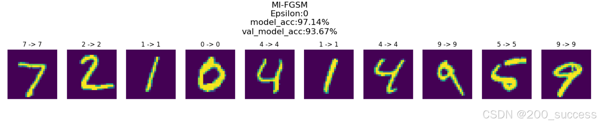
- ϵ = 0.05
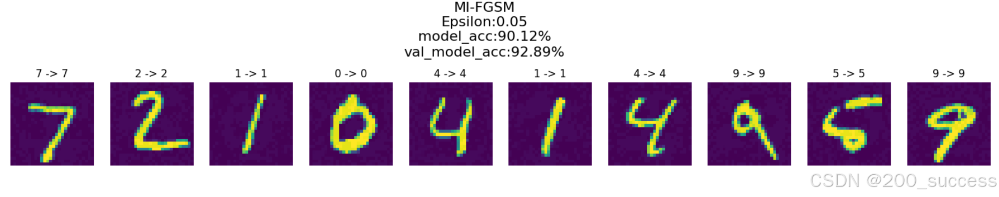
- ϵ= 0.10
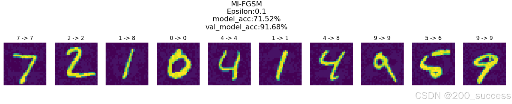
- ϵ= 0.15
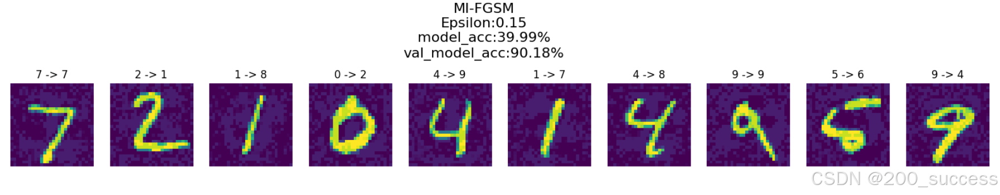
- ϵ= 0.20
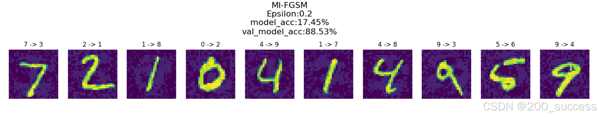
- ϵ= 0.25
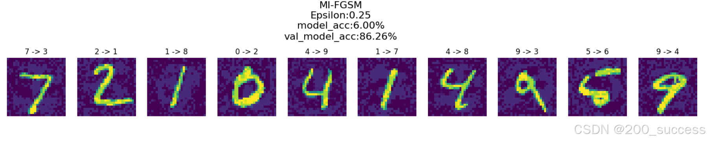
- ϵ= 0.30
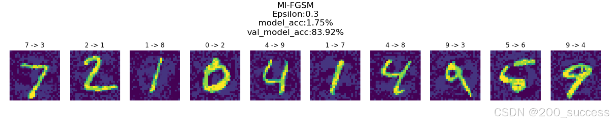
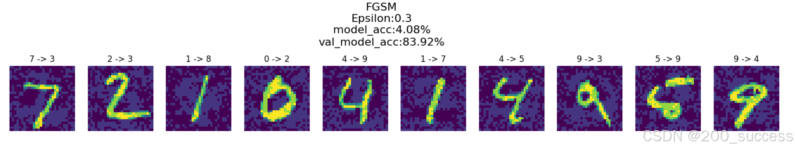
num_iter 影响测试
它控制了对抗样本生成过程中的迭代次数。即
num_iter决定了扰动被逐步施加到输入图像上的次数。
- num_iter=1
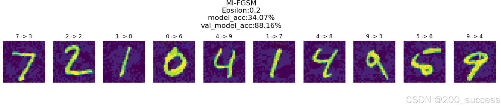
- num_iter=5
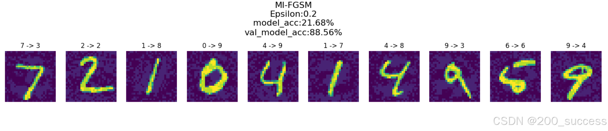
- num_iter=10
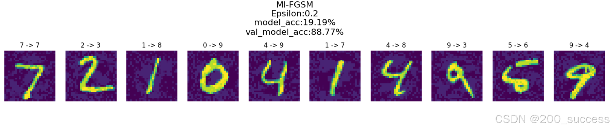
6. 增强攻击效果的原因
- 平滑更新过程
动量机制通过累积之前几次迭代的梯度，使得每次更新不再仅仅依赖当前梯度，而是考虑了一段时间内梯度的平均效果。这种平滑作用可以减少由于随机梯度波动引起的抖动，使得对抗样本的更新方向更加稳定和一致，从而更有效地找到使模型错误分类的扰动。
- 提高梯度信息的利用率
在普通的梯度下降法中，每次更新仅依赖当前计算的梯度，可能会忽略一些有价值的历史梯度信息。而动量机制通过累积多次迭代的梯度信息，可以更全面地利用这些梯度信息，从而在更大范围内找到模型的弱点，增强对抗攻击的效果。
- 加快收敛速度
动量机制能够加速梯度下降的收敛过程。在对抗攻击中，快速找到有效的对抗扰动是非常关键的。通过动量机制，累积的梯度信息可以使得扰动在更少的迭代次数内达到预期的效果，提高攻击效率。
- 克服局部最优
在高维空间中，直接使用当前梯度更新容易陷入局部最优解。而动量机制通过累积多个梯度信息，可以帮助模型摆脱局部最优解的困扰，更容易找到全局最优解或更好的局部最优解，从而生成更强的对抗样本。